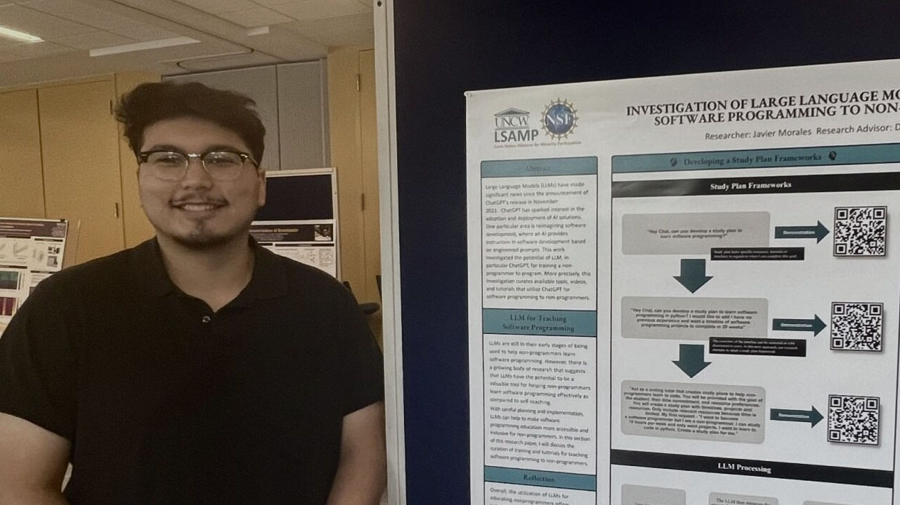
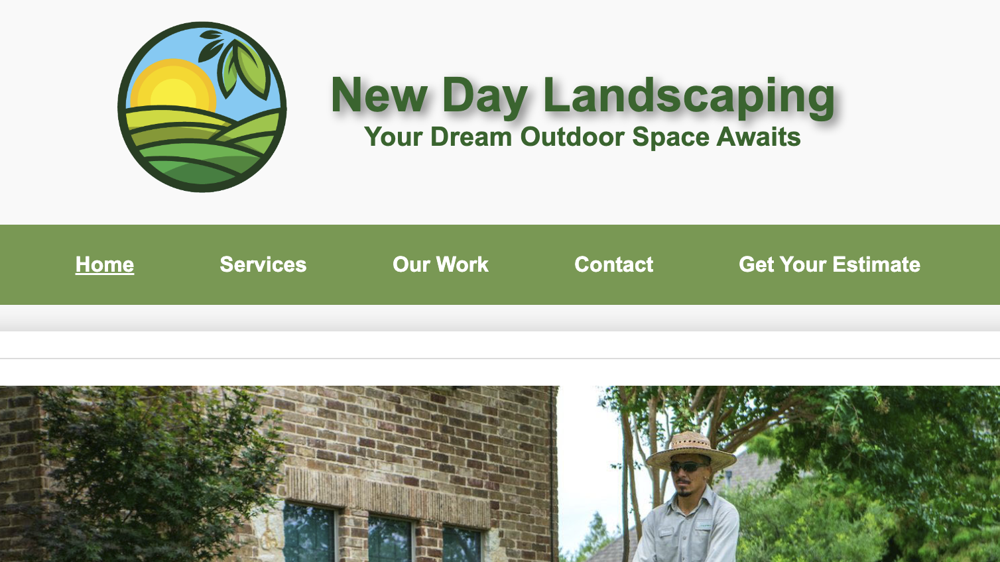

Projects
Language Models for teaching Programming to Non-Programmers NSF Research Project

During the summer, I had the privilege of participating in a research project led by Dr. Karl Ricanek. The project, generously funded by the LSAMP program and the NSF, aimed to explore the effectiveness of large language models in the realm of programming education for non-programmers. Under Dr. Ricanek's guidance, the research delved into innovative approaches to leverage advanced language models for teaching programming concepts. The focus was on developing methods that could make programming more accessible to individuals without prior coding experience. This involved exploring how these language models could facilitate a smoother learning experience and bridge the gap for non-programmers entering the world of coding. The LSAMP program and NSF funding played a crucial role in supporting this intellectually stimulating and impactful research, providing resources and opportunities to contribute to advancements in programming education methodologies. Overall, it was a rewarding experience that allowed me to delve into cutting-edge research at the intersection of language models and programming pedagogy. Click here to view my research poster.
Futuros En STEM

In the fall of 2022, inspired by a vision to bridge the gap for underrepresented students, I conceptualized Futuros en STEM, a non-profit organization. This initiative aimed to synergize my expertise in software engineering with a commitment to providing tailored resources and opportunities. Over the following months, I tirelessly pitched the idea to various stakeholders, seeking support to bring this vision to life. By the spring of 2023, I had successfully built a dedicated team with diverse roles, including a secretary and a web development team that I took the lead in guiding. The journey was not without its challenges, but today, Futuros en STEM stands as a beacon of success at UNC Wilmington. The organization has solidified collaborations with multiple Fortune 500 companies, showcasing the resonance of its mission with industry leaders. Importantly, the impact has been profound, with hundreds of students benefiting from the resources and opportunities provided by Futuros en STEM, contributing to a more inclusive and empowered STEM community at UNC Wilmington.
New Day Landscaping

Over the course of the past year, I undertook the ambitious challenge of immersing myself in the realm of web development. Diligently learning HTML, CSS, and JavaScript, I delved into the intricacies of each language to acquire a comprehensive skill set. The culmination of my efforts materialized in the creation of the website you are currently perusing. This project served as both a testing ground for my newfound proficiency and a testament to my commitment to excellence in web development. Motivated by the positive outcomes of this personal project, I seized the opportunity to apply my skills in a real-world context. I reached out to a local company from my hometown and proposed a redesign of their website. Eager to showcase the potential enhancements I could bring to their online presence, I incorporated innovative design elements and improved functionality. To witness the tangible results of this collaboration, please take a moment to explore the website. It reflects not only my technical expertise but also my dedication to delivering visually appealing and user-friendly web solutions.
Digitizing History:
Extraction of historical data using Optical Character Recognition (OCR) tool Tesseract and incorporating Natural Language Processing methods (SpaCy) and Pandas to create structured digital data from historical documents, such as newspaper articles from the 19th century. This project was completed in collaboration with Dr. John Nox at the University of North Carolina at Wilmington.